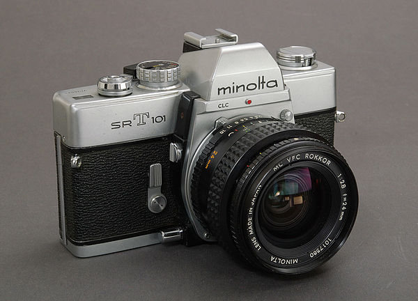
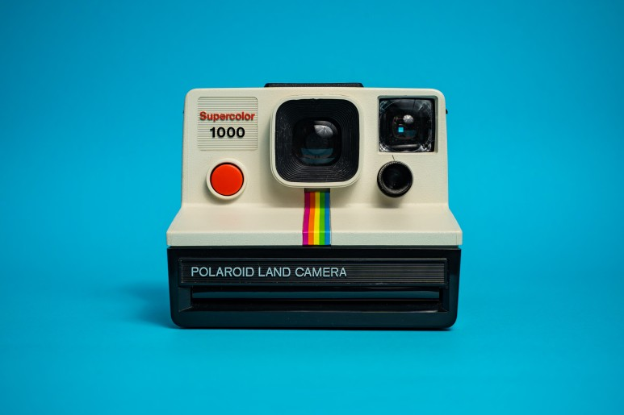
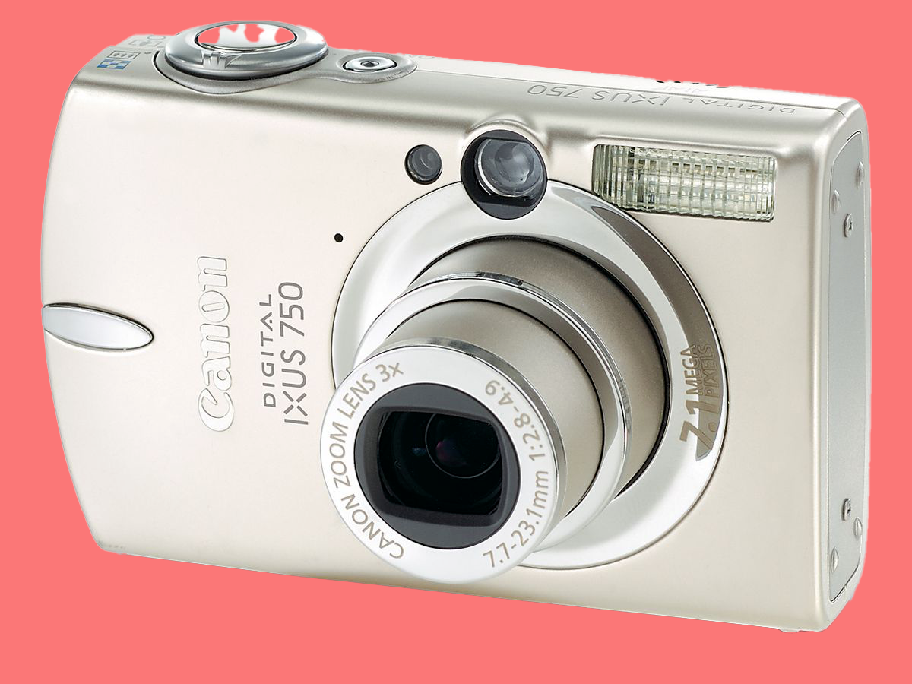

빈티지 카메라 소개빈티지 디카 기종소개 빈티지 디카를 사용하기 위한 준비물 빈티지 카메라로 찍은 사진들 사진찍으러 가기 좋은 가을 단풍 명소
빈티지 카메라란 과거에 사용되었던 카메라를 말하는데, 현재도 많은 사람들이 취미나 예술적 표현을 위해 사용하고 있습니다. 빈티지 카메라는 디지털 카메라와 달리 필름을 사용하거나, 디지털 카메라보다 오래된 기술을 사용하여 특별한 감성이나 분위기를 담을 수 있습니다.
이 웹사이트에서는 빈티지 디지털 카메라, 줄여서 빈티지 디카에 대해서 주로 다룹니다. 빈티지 디카에 대해 몰랐던 분이라면, 이번 기회에 빈티지 디카에 대해 알아가는 시간이 되셨으면 좋겠습니다.
빈티지 카메라의 종류는 다양한데, 대표적으로는 아래와 같은 것들이 있습니다.
① 필름 카메라: 필름이라는 물질에 빛을 노출시켜 이미지를 기록하는 카메라입니다. 필름의 종류나 크기, 노출 시간 등에 따라 다른 색감이나 질감을 표현할 수 있습니다. 필름 카메라의 장점은 디지털 카메라보다 저렴하고, 필름을 교체하면서 다양한 스타일의 사진을 찍을 수 있다는 것입니다. 필름 카메라의 단점은 필름을 구하기 어렵고, 현상이나 인화를 해야만 사진을 볼 수 있다는 것입니다.

미놀타 SR-T-101
Polaroid Land Camera 1000
Canon Digital IXUS 750